Página 1 de 40
FIAP MBA
F I A P M B A · S T A R T U P O N E 2 0 2 6 . 2
Empreendedorismo & Inovação
2026.2
Aula 0 · Onboarding da disciplina · MBAs
Uma jornada para construir, testar e amadurecer uma tese de negócio ao longo do ciclo do MBA.
Ver página original com imagens e diagramas
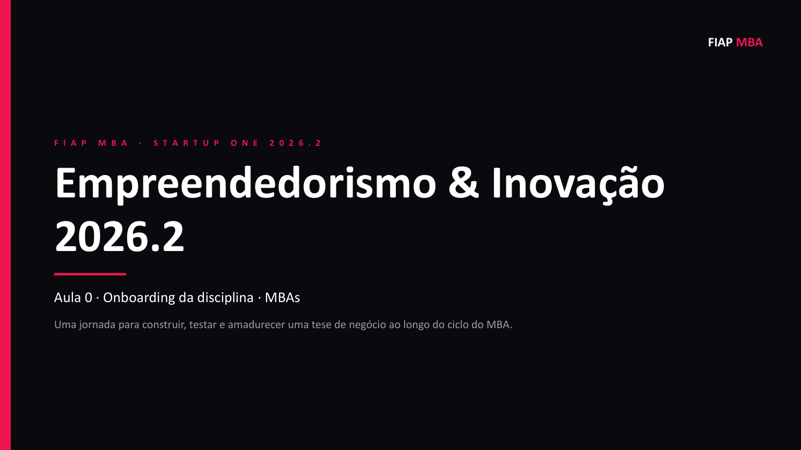
Página 2 de 40
F I A P M B A · S T A R T U P O N E 2 0 2 6 . 2 FIAP MBA
Q U E M C O N D U Z A J O R N A D A
Mirella Lisboa
Coordenação acadêmica do Startup One nos MBAs FIAP
E C O S S I S T E M A S
Executiva de transformação de negócios e IA na CI&T, onde conecta estratégia, Cubo Itaú · ONONO
tecnologia e pessoas para acelerar a transformação das empresas e a criação de Hubs de inovação e conexão com startups
novos negócios nativos de IA.
C O R P O R A T E
CI&T
Engenheira química pela UFBA, com formação em Business & Entrepreneurship Diretora de Transformação de Negócios & IA
por Cambridge e pós-graduação em Digital Business pela USP/ESALQ. Passou por
Vigor, BASF e Cubo Itaú, liderando iniciativas de inovação aberta, venture A C A D Ê M I C O
building e desenvolvimento de novos negócios. MBA FIAP
Coordenação do Startup One e docência
profmirella.lisboa@fiap.com.br
0 2 / 4 0
Ver página original com imagens e diagramas
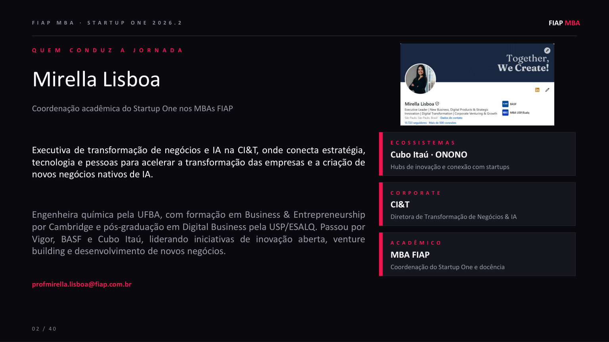
Página 3 de 40
F I A P M B A · S T A R T U P O N E 2 0 2 6 . 2 FIAP MBA
Q U E M A P O I A A J O R N A D A
Scrum Master
Camadas complementares de acompanhamento que sustentam a experiência ao longo do ciclo.
Tiago Taveira
D e s i g n e s t r a t é g i c o , e c o s s i s t e m a e
l i d e r a n ç a
Consultor, professor e pesquisador em
inovação, empreendedorismo e design
estratégico, com mais de 20 anos de
atuação em diferentes setores.
Exceções, dúvidas operacionais e decisões acadêmicas seguem o encaminhamento direto com a coordenação da disciplina.
0 3 / 4 0
Ver página original com imagens e diagramas
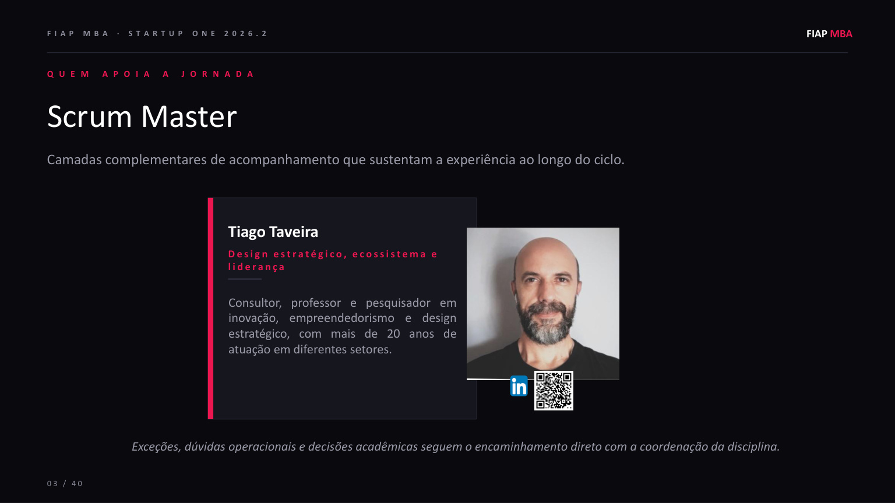
Página 4 de 40
F I A P M B A · S T A R T U P O N E 2 0 2 6 . 2 FIAP MBA
Q U E M V E S T E A C A M I S A D O S E U P R O J E T O
Professores mentores
13 professores acompanham os grupos nas mentorias: empreendedores, investidores e executivos de mercado.
O QUADRO
EMPREENDEDORES INVESTIDORES EXECUTIVOS DE MERCADO
Quem já fundou e fez Quem avalia startups Quem lidera áreas em 20
negócios crescerem para investir grandes empresas
professores mentores que unem
Ajudam a validar o Desafiam a tese, o modelo Trazem a visão do cliente, da prática de mercado e docência
problema, testar hipóteses e de monetização e o operação e da viabilidade da no MBA.
priorizar o que construir. potencial de escala. solução.
As sessões são distribuídas pelo professor conforme a agenda do quadro, entre CP01 e CP02 e entre CP02 e CP03.
0 4 / 4 0
Ver página original com imagens e diagramas
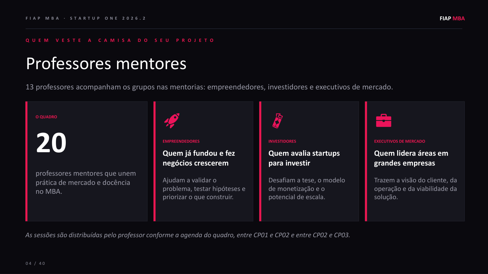
Página 5 de 40
F I A P M B A · S T A R T U P O N E 2 0 2 6 . 2 FIAP MBA
P O R Q U E E S T A D I S C I P L I N A E X I S T E
Uma disciplina de construção.
Aqui vocês transformam o repertório acumulado no MBA em um projeto real de negócio, conduzido
com método e amadurecido ao longo do ciclo.
A jornada articula inovação, tecnologia, mercado e empreendedorismo em uma tese consistente, sustentada por
entregas progressivas, feedback contínuo e mentoria especializada do começo ao fim.
01 02 03
Construção aplicada Inteligência coletiva Resultado com valor de mercado
O aprendizado se materializa em validação de Cada grupo evolui em diálogo com mentores e O ciclo se encerra com uma tese de negócio
hipóteses, prototipagem e iterações sucessivas colegas, com momentos de troca estruturada que defensável, com lógica de viabilidade e
sobre o próprio projeto. ampliam a qualidade das decisões. capacidade de seguir além da sala de aula.
0 5 / 4 0
Ver página original com imagens e diagramas
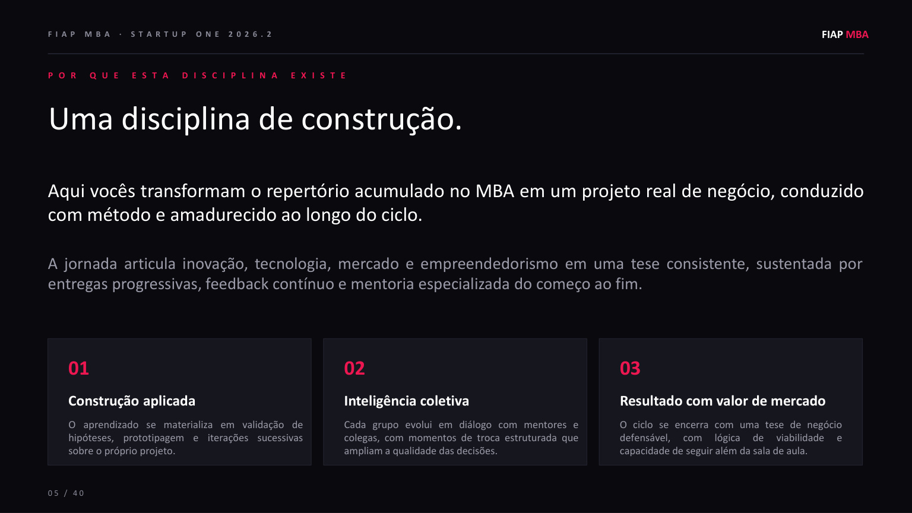
Página 6 de 40
F I A P M B A · S T A R T U P O N E 2 0 2 6 . 2 FIAP MBA
O Q U E V O C Ê S V Ã O C O N S T R U I R
Uma tese de negócio completa.
Quatro camadas que se sustentam e formam a coerência do projeto, do problema à apresentação final.
01 02 03 04
Problema Solução e valor Mercado e viabilidade Pitch e protótipo
Identificação de uma dor
Construção da proposta de Análise de monetização, Storytelling executivo,
concreta, com público bem
valor e do modelo de projeções, escalabilidade e demonstração da solução e
definido e contexto que
negócio, sustentando como a racional econômico que construção da apresentação
justifique o esforço de
solução cria e captura valor. tornam o projeto defensável. que sintetiza toda a tese.
resolvê-la.
0 6 / 4 0
Ver página original com imagens e diagramas
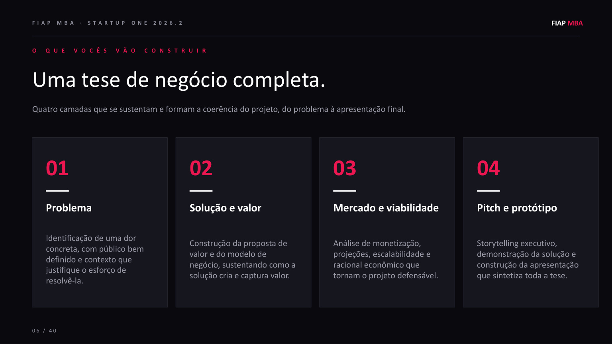
Página 7 de 40
F I A P M B A · S T A R T U P O N E 2 0 2 6 . 2 FIAP MBA
E S T R U T U R A D A D I S C I P L I N A
Os quatro pilares.
Quatro elementos que se sustentam mutuamente e organizam a experiência ao longo de todo o ciclo.
1 Cinco aulas gravadas 2 Três checkpoints ao vivo
Conteúdo-base produzido com profundidade, comum a Encontros no Teams com o (a) professor(a) mentor(a)
todos os alunos e disponível para ser assistido no ritmo para aprofundar conceitos, trocar experiências e orientar
de cada grupo. o avanço do projeto.
3 Mentorias Individuais (por grupo) 4 Duas entregas: uma intermediária e uma final.
A intermediária é um único documento que reúne a
Encontros para destravar o andamento do projeto, investigação do problema e a estruturação da proposta de
agendadas entre os CPs, com horários flexíveis e variados, valor. A entrega final é o TCC completo, formado por três
de acordo com a agenda do professor. materiais que contam a mesma história: o Business Deck,
o Pitch Deck e o Vídeo Pitch.
0 7 / 4 0
Ver página original com imagens e diagramas
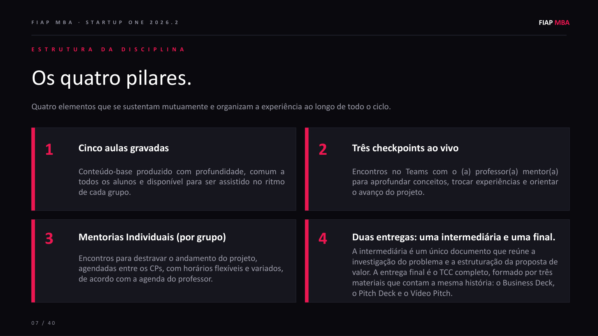
Página 8 de 40
F I A P M B A · S T A R T U P O N E 2 0 2 6 . 2 FIAP MBA
AMBIENTES
Onde cada atividade acontece
Use cada ambiente para sua finalidade e acompanhe os comunicados ao longo do ciclo.
01 02 03 04
Cinco aulas gravadas Três checkpoints ao Mentorias individuais Duas entregas:
vivo (por grupo) intermediária e final
ONDE ACONTECE ONDE ACONTECE ONDE ACONTECE ONDE ACONTECE
Plataforma ON Microsoft Teams Calendly do professor Portal do Aluno
Conteúdo escrito e vídeos. Checkpoints ao vivo, Agendamento das mentorias Matchmaking, formalização,
Acesso pelo menu Aulas no comunicação e materiais de individuais de até 30 minutos. consulta do mentor e entregas.
Portal do Aluno. apoio.
A disciplina acontece remotamente, inclusive para as turmas Híbridas. Verifique seus acessos antes do CP01.
0 8 / 4 0
Ver página original com imagens e diagramas
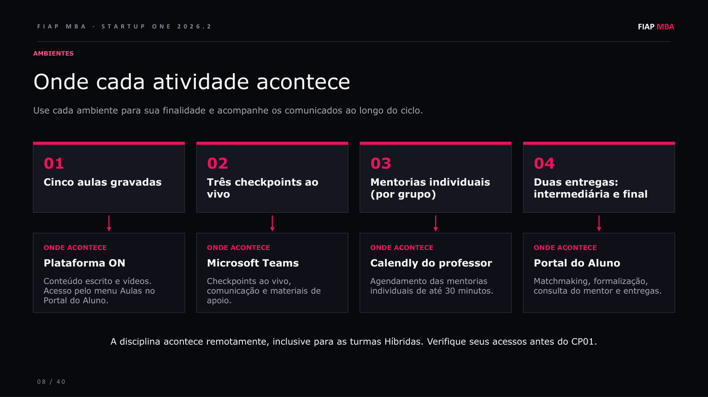
Página 9 de 40
F I A P M B A · S T A R T U P O N E 2 0 2 6 . 2 FIAP MBA
CALENDÁRIO 2026.2
Cinco marcos, de dezembro a setembro
As datas da disciplina e o que o grupo precisa fazer em cada etapa.
11/12/2026 19/03/2027 14/05/2027 13/08/2027 16/08 a 30/09/2027
CP01 Entrega intermediária CP02 CP03 Entrega final
Teams · 19h às 21h30 Portal do Aluno Teams · 19h às 21h30 Teams · 19h às 21h30 Portal do Aluno
Mentorias · dez a mar Mentorias · mar a mai
O QUE FAZER O QUE FAZER O QUE FAZER O QUE FAZER O QUE FAZER
Participar do encontro e Enviar o Estudo de Receber os feedbacks da Fazer a simulação de Enviar o Business Deck,
iniciar o estudo de Problema e Solução em entrega intermediária e pitch e receber o último o Pitch Deck e o Vídeo
problema e solução com PDF. Vale até +1,0 avançar em monetização feedback antes do TCC. Pitch.
base nas aulas 01 e 02. ponto no TCC. e protótipo.
Checkpoints: participação opcional, mas recomendada. Mentorias: 3 por grupo, de 30 minutos, agendadas pelo Calendly.
0 9 / 4 0
Ver página original com imagens e diagramas
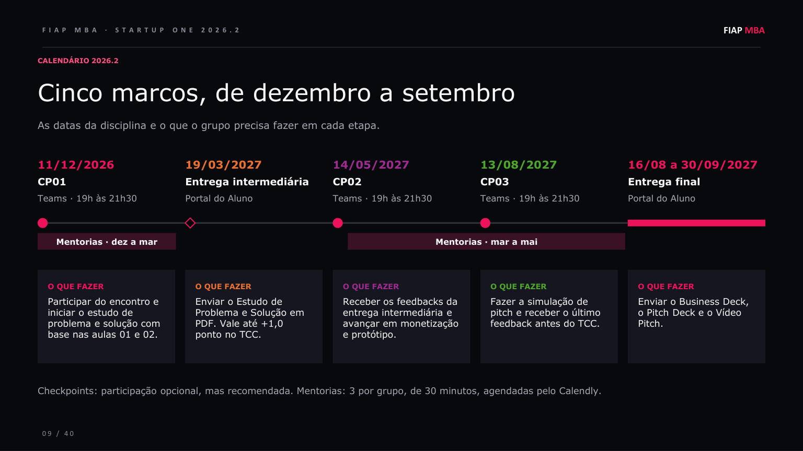
Página 10 de 40
F I A P M B A · S T A R T U P O N E 2 0 2 6 . 2 FIAP MBA
FORMAÇÃO DOS GRUPOS
Regras para organizar o time
A composição do grupo influencia o ritmo do projeto e o acompanhamento durante o ciclo.
ATENÇÃO 01 De dois a quatro integrantes
O limite de quatro integrantes segue o Regimento do MBA e não admite exceções. A formalização é
obrigatória
Mesmo ciclo e mesma modalidade 02 Sem formalização, o grupo não existe oficialmente no sistema. A FIAP não
Podem reunir colegas de diferentes cursos e turmas do mesmo ciclo. Live com Live e Híbrido com Híbrido. consegue atribuir o mentor,
comprometendo o acesso aos
checkpoints, mentorias e correções do
TCC.
03 Cadastro oficial até 30/11/2026
O cadastro no Portal do Aluno permite à coordenação atribuir o professor mentor ao grupo.
1 0 / 4 0
Ver página original com imagens e diagramas
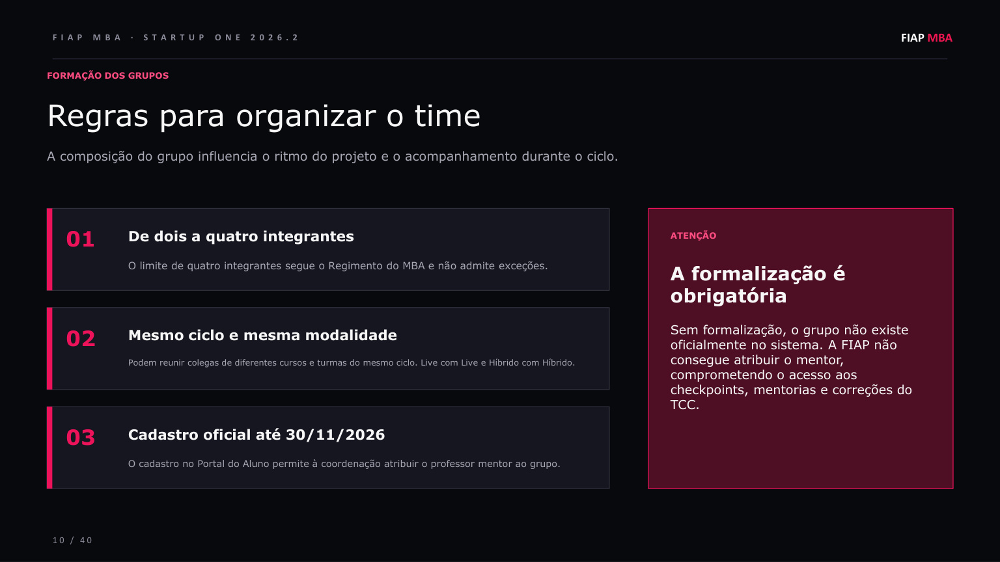
Página 11 de 40
F I A P M B A · S T A R T U P O N E 2 0 2 6 . 2 FIAP MBA
FORMALIZAÇÃO ATÉ 30/11/2026
Cadastro oficial do projeto e dos integrantes
Um único aluno do grupo realiza o cadastro de todos os integrantes.
Portal do Aluno / Empreendedorismo e Inovação / Formalização
01 Cadastro do grupo
O responsável acessa a área da disciplina e cria o
grupo oficialmente.
02 Inclusão dos integrantes
Cada colega compartilha seu RM com o
responsável. Confiram RM, nome e turma de todos.
03 Conferência e confirmação
Verifiquem o limite de quatro alunos, o ciclo e a
modalidade. Confirmem o cadastro até 30/11/2026.
Criar um projeto no Matchmaking não substitui esse cadastro.
1 1 / 4 0
Ver página original com imagens e diagramas
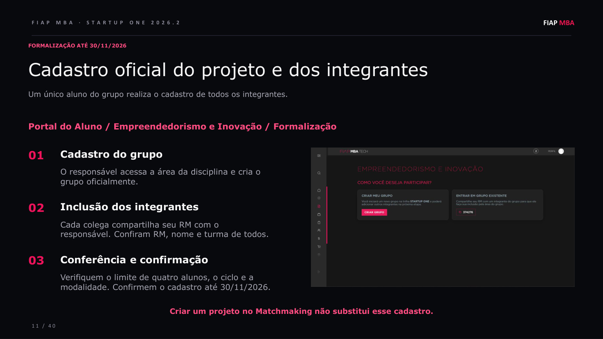
Página 12 de 40
F I A P M B A · S T A R T U P O N E 2 0 2 6 . 2 FIAP MBA
FORMAÇÃO DOS GRUPOS
Matchmaking no Portal do Aluno
Para quem ainda não tem grupo, a ferramenta ajuda a encontrar colegas com interesses e ideias compatíveis.
Portal do Aluno / Empreendedorismo e Inovação / Matchmaking
01 Apresentação da ideia
Cadastre sua ideia ou área de interesse e informe uma forma de
contato.
02 Contato com colegas
Conheça os projetos disponíveis e converse com os responsáveis
para combinar sua participação.
03 Alinhamento do grupo
Definam os integrantes e avancem para a formalização no Portal
do Aluno.
Inscrever-se demonstra interesse. O card e a inscrição no Matchmaking
não formalizam o grupo nem garantem a vaga. Exemplo de interface do material 2026.1
1 2 / 4 0
Ver página original com imagens e diagramas
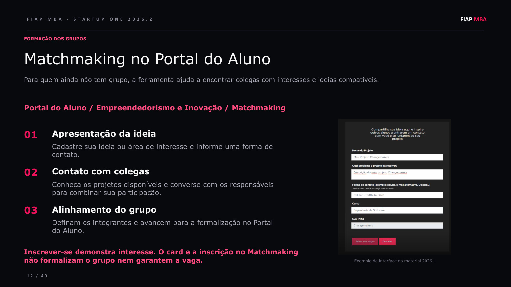
Página 13 de 40
F I A P M B A · S T A R T U P O N E 2 0 2 6 . 2 FIAP MBA
GRUPOS E ACOMPANHAMENTO
Professor mentor e situações de grupo
O vínculo oficial do grupo define quem acompanha o projeto durante a disciplina.
Onde consultar o mentor Após a atribuição pela coordenação, consulte a área de
Empreendedorismo e Inovação no Portal do Aluno.
Ainda está sem grupo? Use o Matchmaking e converse com colegas. Se continuar sem grupo,
procure a coordenação antes de 30/11/2026.
Precisa trocar de grupo? Envie a solicitação à coordenação por e-mail ou Teams. Qualquer
mudança precisa de formalização.
Coordenação: Mirella Lisboa / profmirella.lisboa@fiap.com.br
1 3 / 4 0
Ver página original com imagens e diagramas
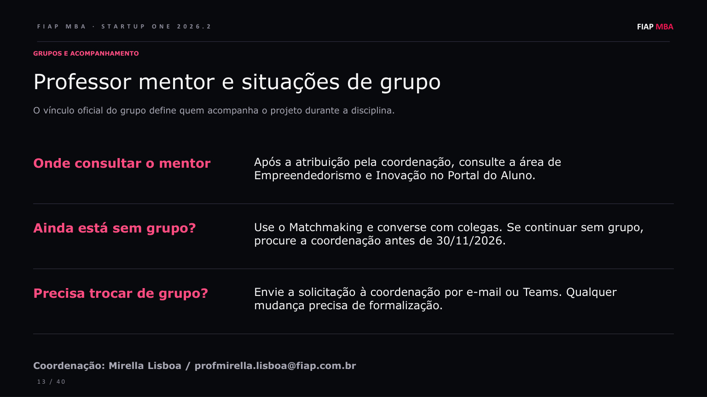
Página 14 de 40
F I A P M B A · S T A R T U P O N E 2 0 2 6 . 2 FIAP MBA
MICROSOFT TEAMS
Acesso ao canal do professor mentor
Os checkpoints acontecem no canal do seu professor. O Teams também concentra os comunicados e materiais da disciplina.
01 Professor identificado Consulte o nome do mentor no Portal do Aluno após a atribuição pela
coordenação.
02 Equipe do ciclo 2026.2 No Teams, acesse Equipes e localize a equipe 2026.2 | STARTUP ONE.
03 Canais ocultos Abra a lista de canais ocultos e procure o canal com o nome do seu
professor mentor.
04 Canal do professor Exiba o canal e acesse os checkpoints por ele. Confirme o acesso antes do
CP01.
Canal Geral: comunicados e materiais. Canal do mentor: checkpoints e acompanhamento dos seus grupos.
Se a equipe ou o canal não aparecer, sinalize à coordenação antes do primeiro checkpoint.
1 4 / 4 0
Ver página original com imagens e diagramas
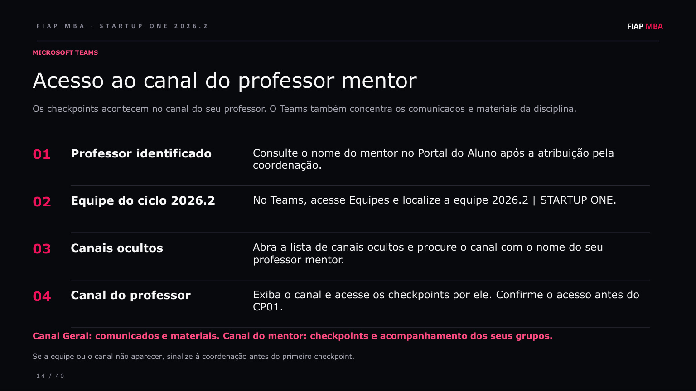
Página 15 de 40
F I A P M B A · S T A R T U P O N E 2 0 2 6 . 2 FIAP MBA
MENTORIAS INDIVIDUAIS
Como aproveitar cada sessão
A mentoria é uma sessão de trabalho sobre o projeto do grupo, com duração de até 30 minutos.
Agendamento Preparação Pontualidade Execução
Use o Calendly ou a Leve o material em Atrasos não ampliam a Registrem as decisões e
agenda indicada pelo desenvolvimento e sessão. Cancelamentos atualizem os entregáveis.
professor. Reserve as dúvidas objetivas. Pelo avisados com O desenvolvimento do
sessões nas janelas menos um integrante antecedência podem ser TCC continua sob
previstas. deve participar. reagendados com o responsabilidade do
professor. grupo.
1 5 / 4 0
Ver página original com imagens e diagramas
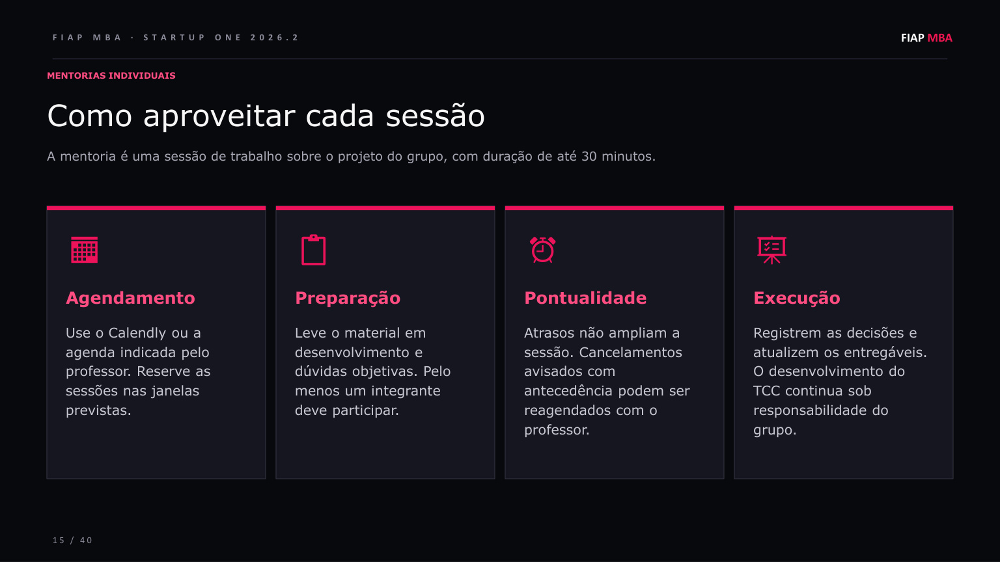
Página 16 de 40
F I A P M B A · S T A R T U P O N E 2 0 2 6 . 2 FIAP MBA
ENTREGA INTERMEDIÁRIA / ATÉ 19/03/2027
Estudo de Problema e Solução
A entrega intermediária é um único documento que reúne a investigação do problema e a estruturação da proposta de valor.
PARTE 1 PARTE 2
RECONHECIMENTO DA EVOLUÇÃO Problema e evidências Solução e valor
■ Dor e público afetado ■ Persona e empatia Até +1,0
■ Contexto e recorte ■ Jornada do usuário
■ ■ Hipóteses investigadas Proposta de valor ponto
■ Desk research ■ Value Proposition Canvas na nota final do TCC
■ Pesquisas e entrevistas ■ Diferenciais e aderência
Os grupos que realizarem a entrega
intermediária poderão receber até
um ponto adicional. A entrega final
do TCC continua obrigatória e É A
FORMATO ENVIO CORREÇÃO ÚNICA QUE COMPÕE A NOTA FINAL
Word exportado para PDF Portal do Aluno, até Feedback do professor DA DISCIPLINA.
19/03/2027 antes do CP02
1 6 / 4 0
Ver página original com imagens e diagramas
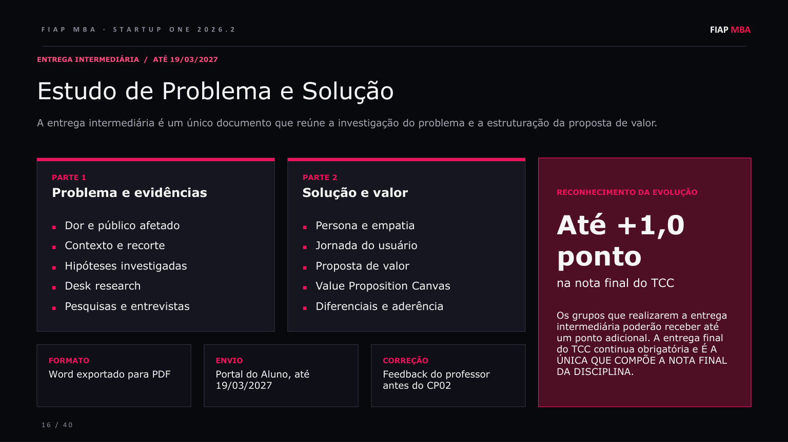
Página 17 de 40
F I A P M B A · S T A R T U P O N E 2 0 2 6 . 2 FIAP MBA
ENTREGA FINAL / 16/08/2027 A 30/09/2027
Três componentes formam o TCC
Os materiais precisam contar a mesma história e apresentar premissas consistentes entre si.
01 Business Deck 02 Pitch Deck 03 Vídeo Pitch
Documento em Word, exportado para Apresentação visual, exportada para PDF, Gravação de até cinco minutos, em link
PDF, com o desenvolvimento completo do com a narrativa do projeto. aberto e acessível.
projeto.
O QUE INCLUIR O QUE INCLUIR O QUE APRESENTAR
■ Problema, público e evidências ■ Problema e público ■ Problema e público
■ Persona, jornada e proposta de valor ■ Solução e proposta de valor ■ Solução proposta
■ Modelo de negócio e monetização ■ Modelo de negócio e monetização ■ Oportunidade e viabilidade
■ Protótipo e funcionalidades ■ Protótipo e funcionalidades ■ Demonstração do protótipo
■ Potencial de mercado e escala ■ Potencial de mercado e escala ■ Time
■ Lógica financeira: receita, custos, ■ Lógica financeira: receita, custos,
viabilidade e indicadores viabilidade e indicadores
A lógica financeira deve ser proporcional ao estágio do projeto, com racional claro, coerente e defensável.
Um único integrante realiza o envio e registra os RMs de todos os participantes. Os templates estarão no Teams.
1 7 / 4 0
Ver página original com imagens e diagramas
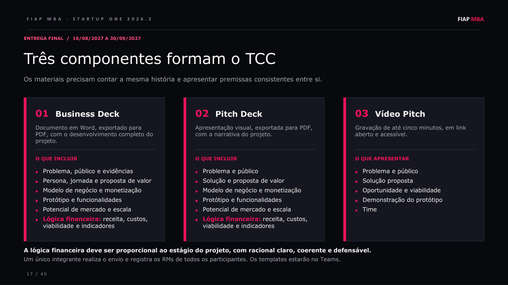
Página 18 de 40
F I A P M B A · S T A R T U P O N E 2 0 2 6 . 2 FIAP MBA
ENTREGA FINAL NO PORTAL DO ALUNO
Como enviar a documentação do TCC
Período de envio: 16/08/2027 a 30/09/2027. Um único integrante realiza a submissão do grupo.
1. Acesso ao formulário Portal do Aluno / Empreendedorismo e Inovação / Entrega final do TCC.
2. Identificação do grupo Responda às perguntas do formulário e registre os RMs de todos os
integrantes.
3. Materiais finais Anexe o Business Deck e o Pitch Deck em PDF e informe o link aberto do Vídeo
Pitch.
4. Confirmação Confira os arquivos e os integrantes, indique se o grupo quer competir no
Startup One e confirme o envio.
Documentos devem ser arquivos anexados. Links de edição e boards virtuais não substituem os PDFs.
1 8 / 4 0
Ver página original com imagens e diagramas
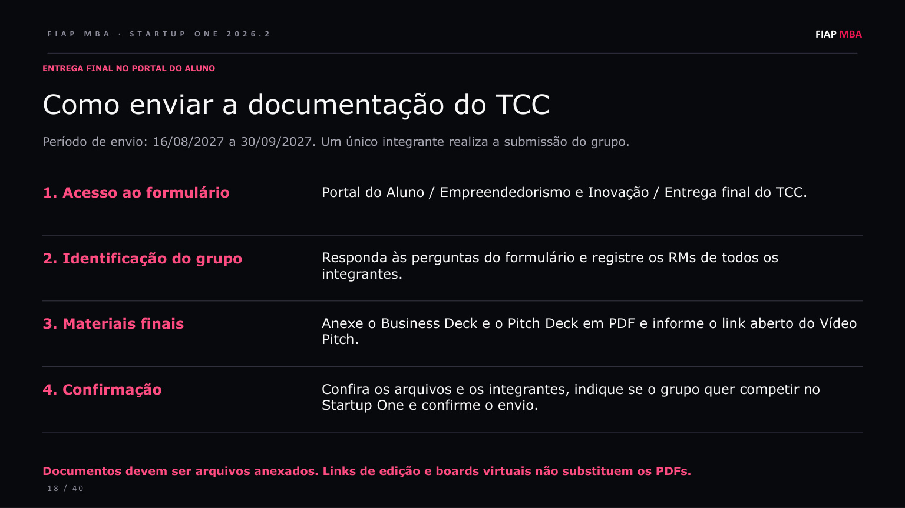
Página 19 de 40
F I A P M B A · S T A R T U P O N E 2 0 2 6 . 2 FIAP MBA
AVALIAÇÃO FINAL
Critérios de correção do TCC
O professor avalia a documentação final como um conjunto coerente. A entrega intermediária pode somar até +1 ponto.
01 02 03 04 05
Proposta de Potencial de Execução e Pitch Coerência
valor escala viabilidade geral
Originalidade, Estratégia de Capacidade do Clareza da narrativa Conexão entre
profundidade e entrada no grupo, roadmap e e consistência da problema, solução,
relevância da mercado, adoção e domínio das defesa da tese. modelo de negócio,
solução diante do possibilidade de premissas protótipo e
problema. crescimento econômicas e de viabilidade.
sustentável. execução.
1 9 / 4 0
Ver página original com imagens e diagramas
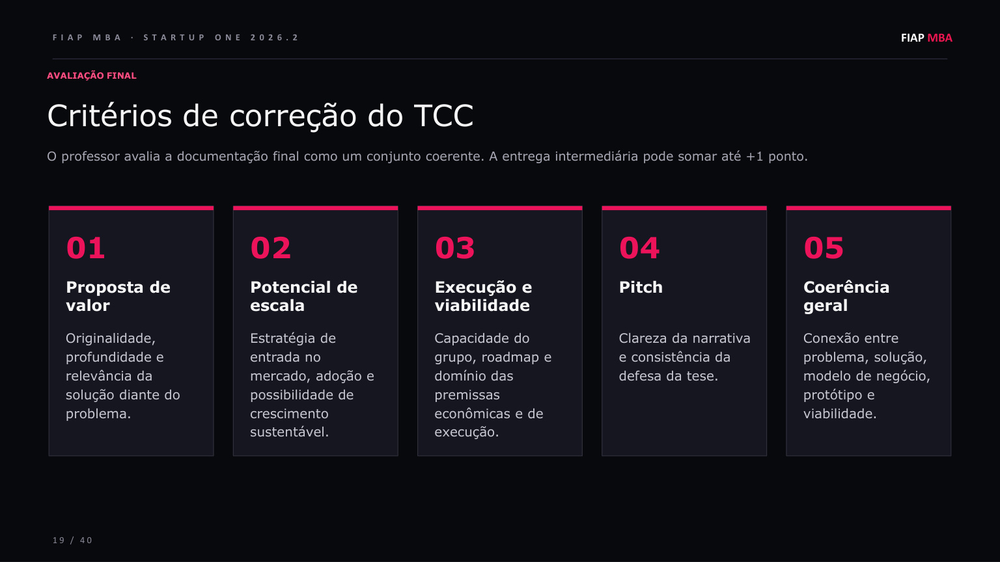
Página 20 de 40
2 0 / 4 0
Ver página original com imagens e diagramas
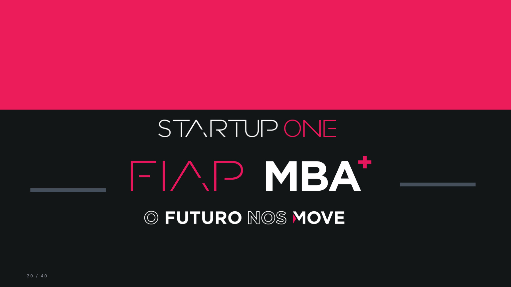
Página 21 de 40
F I A P M B A · S T A R T U P O N E 2 0 2 6 . 2 FIAP MBA
S T A R T U P O N E 2 0 2 6
Da disciplina ao Startup One.
A competição opcional que transforma o TCC em uma tese de negócio testada por mentores, banca de mercado e palco real.
01 02 03 04
Thematic Call League Formation Venture Sprint Startup One Festival
Após a entrega final, os grupos
Período intensivo de mentorias Final presencial reunindo
Lançamento das ligas temáticas interessados escolhem a liga e
especializadas, rodada de fogo pitches, banca de mercado,
na Aula 0, orientando os passam por uma banca interna
e bancas avaliativas conduzidas premiação e visibilidade junto
projetos desde o início do ciclo. que seleciona até seis startups
dentro de cada liga. ao ecossistema.
por liga.
A participação é opcional e indicada pelo grupo no momento da entrega final do TCC, no Portal do Aluno.
2 1 / 4 0
Ver página original com imagens e diagramas
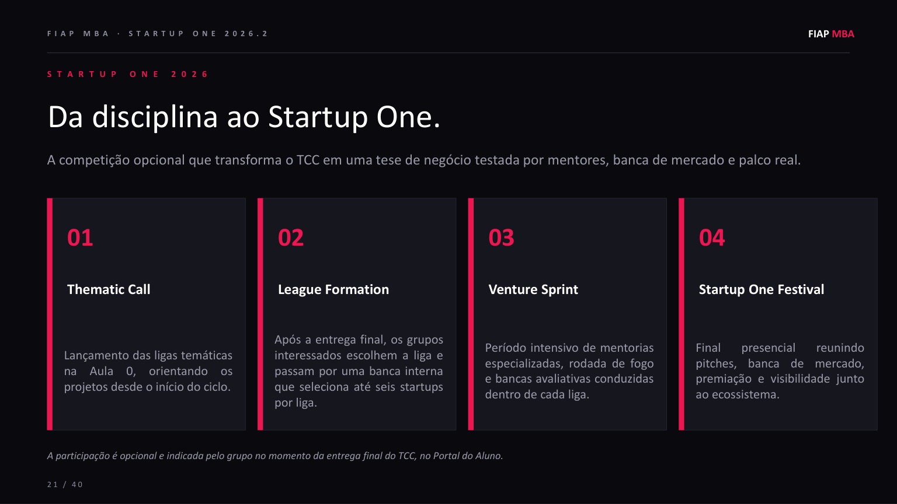
Página 22 de 40
F I A P M B A · S T A R T U P O N E 2 0 2 6 . 2 FIAP MBA
L I G A S T E M Á T I C A S 2 0 2 6
Cinco macrotemas de futuro.
Cada liga organiza um conjunto amplo de teses, e a escolha é orientada pela transformação central que o projeto propõe.
Health, Wellness & Life Sciences Healthtech · biotech · mental health · femtech · longevidade · saúde 01 animal · petcare · wellness Cuidar, prolongar e elevar a vida, humana e animal.
Future of Work, Learning & Talent Edtech · HR tech · corporate learning · gig · creator economy · 02 produtividade · IA no trabalho Como trabalhamos, aprendemos e nos desenvolvemos.
Sustainability, Climate & Agri-Food Systems Climate tech · agtech · foodtech · energia · economia circular · ESG · 03 bioeconomia Como produzimos, consumimos e usamos recursos.
Digital Economy, Fintech & Smart Commerce Fintech · insurtech · retailtech · SaaS B2B · logtech · cibersegurança · 04 IA aplicada · Web3 Dinheiro, dados e comércio na economia digital.
Cities, Society & Creative Economy Smart cities · mobilidade · govtech · mídia · esporte · entretenimento · 05 turismo · inclusão Como vivemos, nos conectamos e criamos cultura.
2 2 / 4 0
Ver página original com imagens e diagramas
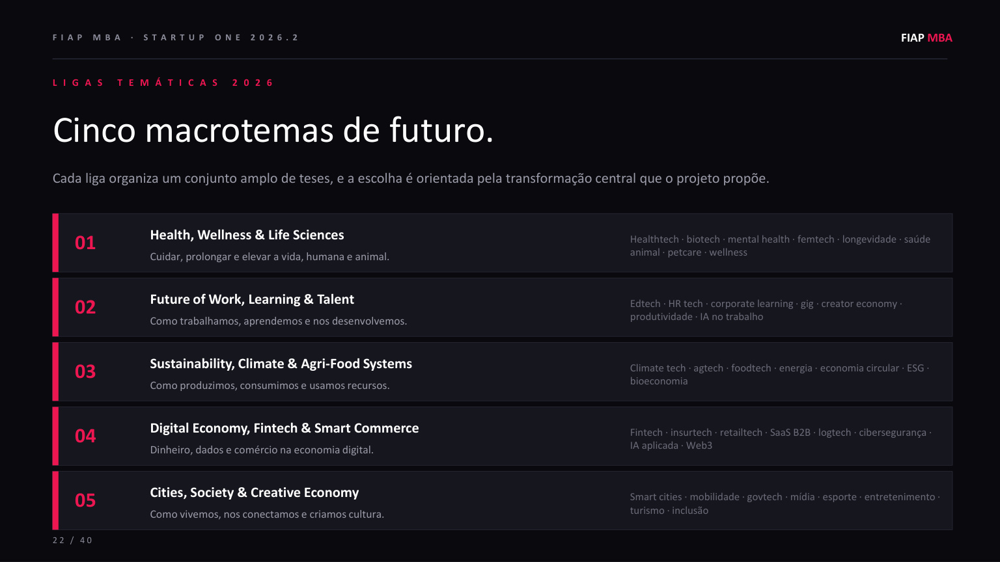
Página 23 de 40
F I A P M B A · S T A R T U P O N E 2 0 2 6 . 2 FIAP MBA
O Q U E E S P E R A M O S D E V O C Ê S
Premiação e início da jornada.
P R E M I A Ç Ã O A C U M U L A T I V A U M A P A L A V R A F I N A L
Imersão Vale do Silício StartSe, aceleração completa Rock New Ventures e acesso aos O projeto que vocês vão construir começa 1º produtos StartSe.
hoje.
Aceleração completa Rock New Ventures e acesso aos produtos StartSe. 2º A consistência ao longo do ciclo importa mais do
que ter uma ideia totalmente pronta no primeiro
dia, e o que diferencia os grupos que chegam bem
ao final é a disposição de evoluir em cada etapa,
Aceleração completa Rock New Ventures. 3º
com método e abertura ao feedback que recebem.
Dúvidas: profmirella.lisboa@fiap.com.br
2 3 / 4 0
Ver página original com imagens e diagramas
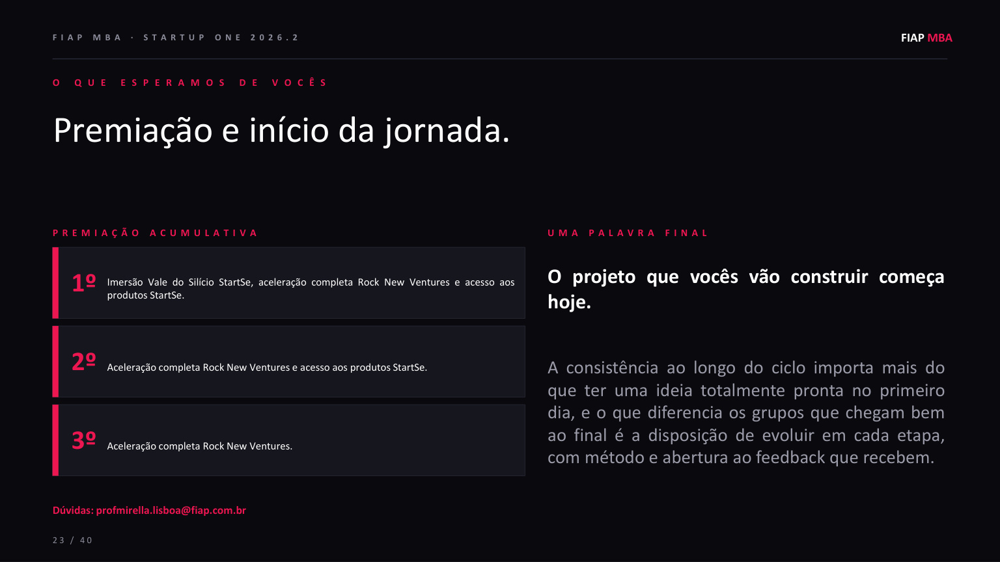
Página 24 de 40
MBA FIAP · 2026.2
FAQ da Disciplina
Empreendedorismo & Inovação
As dúvidas mais comuns sobre grupos, checkpoints, mentorias, entregas, TCC e Startup One
Se você entender esta FAQ, sua jornada fica muito mais simples.
Ver página original com imagens e diagramas
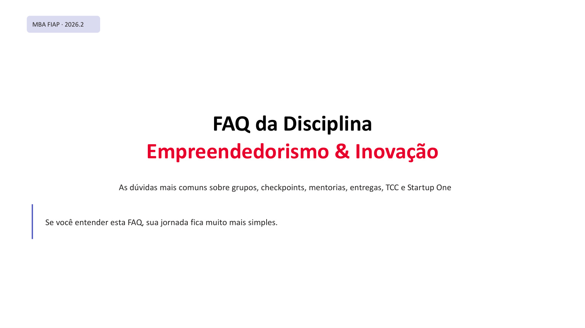
Página 25 de 40
F I A P M B A · S T A R T U P O N E 2 0 2 6 . 2 FIAP MBA
COMO LER ESTA DISCIPLINA
Esta disciplina é diferente. Entenda o modelo.
É igual às outras disciplinas do MBA? Vou entregar uma prova?
Não. É uma jornada aplicada de construção do TCC. Você Não. A lógica principal é projeto aplicado, entrega
aprende, aplica, recebe feedback, ajusta e consolida tudo intermediária, feedbacks contínuos e entrega final do TCC.
na entrega final.
O que vou construir? É só para quem quer empreender?
Uma tese de negócio completa: problema, solução, Não. Também desenvolve competências de inovação,
mercado, modelo de negócio, viabilidade, protótipo e produto, tecnologia, estratégia e transformação de
pitch. negócios dentro de empresas.
2 5 / 4 0
Ver página original com imagens e diagramas
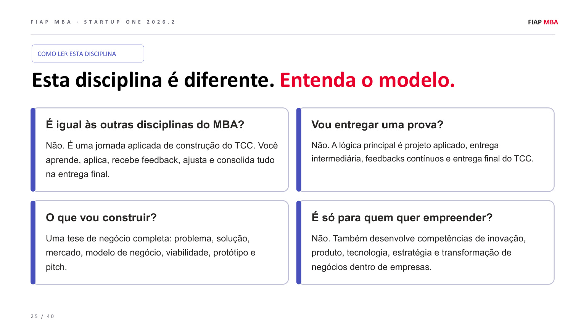
Página 26 de 40
F I A P M B A · S T A R T U P O N E 2 0 2 6 . 2 FIAP MBA
ESTRUTURA DA JORNADA
Como a disciplina está organizada
Aula 4
Aula 1 Aula 3 Aula 5 Aula 2 Protótipo funcional
Ecossistema e Modelos de Pitch final e Desenvolver a e validação
definição do monetização e entrega do projeto proposta de valor
problema viabilidade
11/12/2026 19/03/2027 14/05/2027 13/08/2027 16/08 a 30/09/2027
CP01 · Aulas 1 e 2 Entrega intermediária CP02 · Aulas 3 e 4 CP03 · Aula 5 Entrega final do TCC
As aulas gravadas trazem o conteúdo-base, os três checkpoints ao vivo aprofundam cada etapa e as três mentorias por grupo
apoiam o projeto entre os CPs. Cada etapa alimenta a próxima até a entrega final do TCC.
2 6 / 4 0
Ver página original com imagens e diagramas
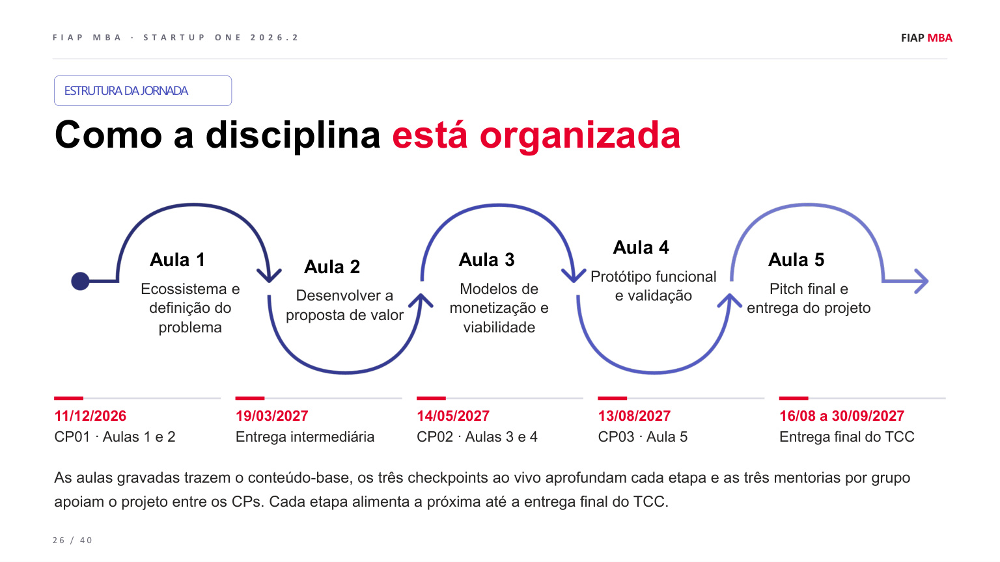
Página 27 de 40
F I A P M B A · S T A R T U P O N E 2 0 2 6 . 2 FIAP MBA
GRUPOS
Grupos: regras essenciais
Posso fazer sozinho? Quantos por grupo?
Não é a recomendação. A jornada foi desenhada para Máximo de 4 integrantes por grupo, não há exceção, está
grupos de 2 a 4 alunos. Empreender exige definido no Regimento do MBA.
complementaridade de competências.
Posso misturar modalidades? Qual o prazo?
Não. LIVE com LIVE, Híbrido com Híbrido. Mesmo ciclo, 30/11/2026 para as duas modalidades. Não deixe para a
mesma modalidade. última semana.
2 7 / 4 0
Ver página original com imagens e diagramas
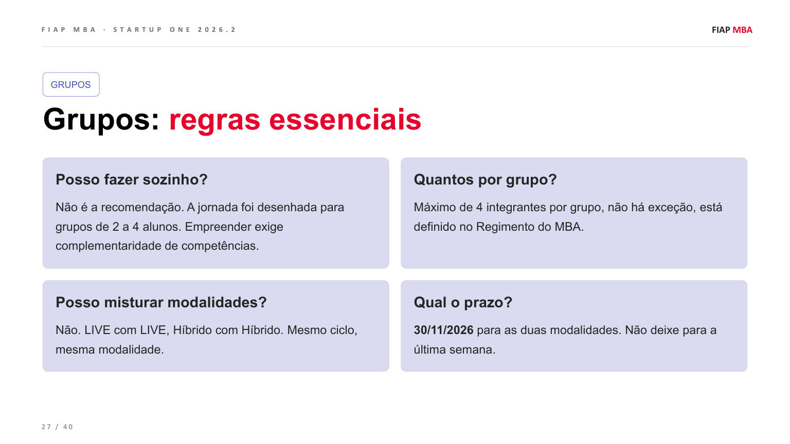
Página 28 de 40
F I A P M B A · S T A R T U P O N E 2 0 2 6 . 2 FIAP MBA
GRUPOS
Matchmaking e formalização
Matchmaking já Quem faz a O que acontece se Onde vejo meu
formaliza meu formalização? não formalizar? professor mentor?
grupo?
Apenas 1 aluno do grupo, A FIAP não consegue Na área de
Não. É apenas para que cadastra todos os atribuir professor mentor. O Empreendedorismo e
encontrar colegas ou integrantes com RM, nome grupo fica sem acesso Inovação do Portal do
demonstrar interesse em e turma. adequado aos checkpoints, Aluno, após atribuição pela
projetos. O grupo só existe mentorias, correções e coordenação.
oficialmente após a TCC.
formalização no Portal do
Aluno.
Grupo não formalizado = grupo inexistente no sistema. Não assuma que o Matchmaking resolve essa etapa.
2 8 / 4 0
Ver página original com imagens e diagramas
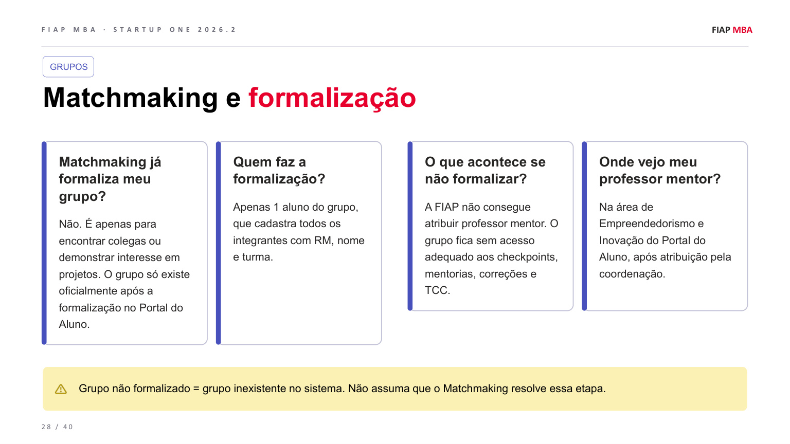
Página 29 de 40
F I A P M B A · S T A R T U P O N E 2 0 2 6 . 2 FIAP MBA
GRUPOS
Trocas de grupo e alunos sem grupo
Posso trocar de grupo Estou sem grupo. O que Entrar em um projeto no
depois? faço? Matchmaking garante
minha vaga?
Qualquer solicitação de troca Use o Matchmaking, converse
deve ser enviada à coordenação com colegas e, se continuar sem Não. A inscrição é demonstração
por e-mail ou Teams. Não grupo, procure a coordenação. de interesse. A inclusão real
combine mudanças paralelas sem depende de alinhamento com o
formalização. responsável e formalização no
sistema.
2 9 / 4 0
Ver página original com imagens e diagramas
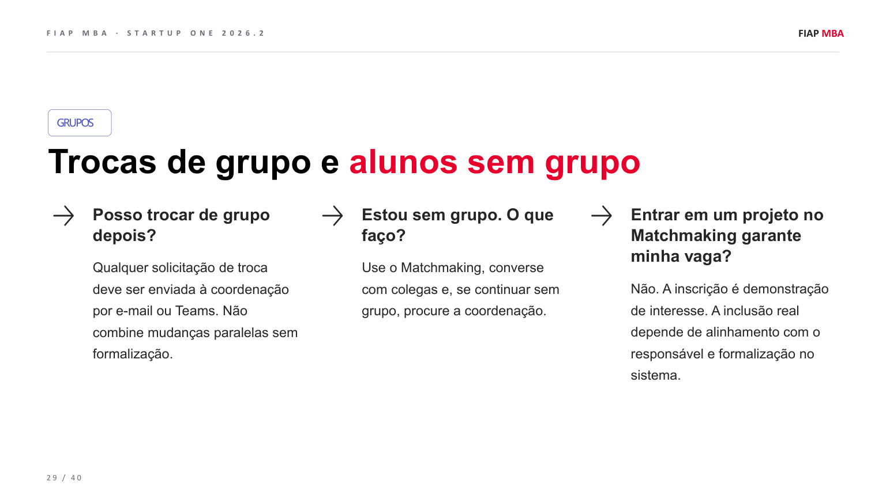
Página 30 de 40
F I A P M B A · S T A R T U P O N E 2 0 2 6 . 2 FIAP MBA
PLATAFORMAS
Onde tudo acontece
Cada plataforma tem um papel específico
Usar o canal errado gera atraso e ruído. Entenda onde cada coisa acontece
e acesse sempre o canal correto.
• Plataforma ON → aulas gravadas (acesso no menu AULAS no Portal
do Aluno)
• Teams → comunicados + checkpoints
• Portal do Aluno → grupos + entregas
• Calendly → mentorias individuais
3 0 / 4 0
Ver página original com imagens e diagramas
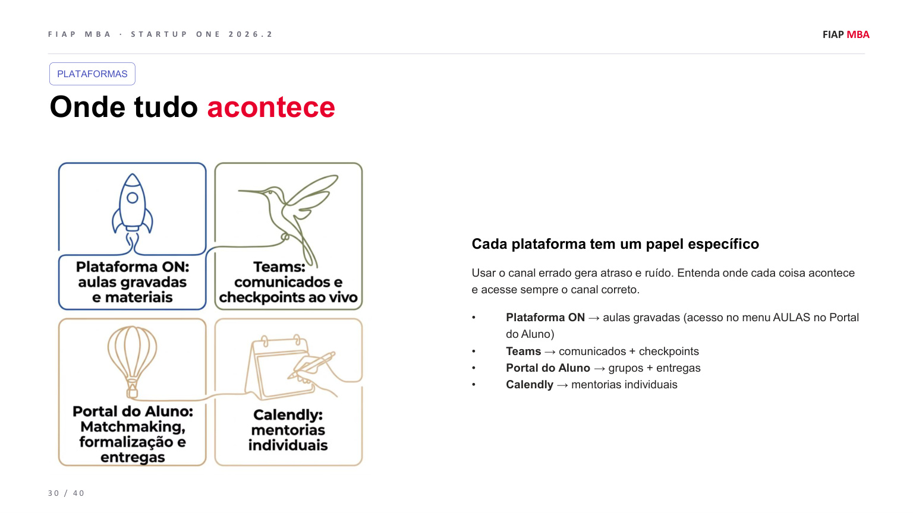
Página 31 de 40
F I A P M B A · S T A R T U P O N E 2 0 2 6 . 2 FIAP MBA
AULAS GRAVADAS
Aulas gravadas: o que você precisa saber
Preciso assistir às aulas gravadas? O checkpoint substitui a aula?
Sim. Elas trazem o conteúdo-base da disciplina e preparam Não. O checkpoint aprofunda e orienta, mas não repete
você para os checkpoints e entregas. integralmente o conteúdo gravado. Assista antes.
Onde assisto? Posso assistir no meu ritmo?
Na Plataforma ON, acesso possível através do Portal do Sim. O formato permite pausar, voltar e rever. Mas assista
Aluno. Disponível a qualquer momento. antes do checkpoint correspondente.
3 1 / 4 0
Ver página original com imagens e diagramas
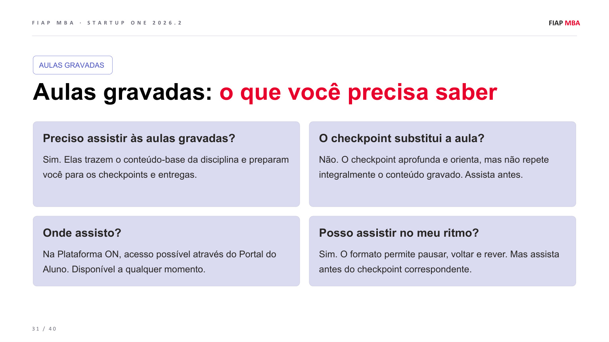
Página 32 de 40
F I A P M B A · S T A R T U P O N E 2 0 2 6 . 2 FIAP MBA
CHECKPOINTS
Checkpoints de Aprendizagem: ao vivo com o professor
O que é um Quando Preciso participar? O CP03 é diferente?
checkpoint? acontecem?
Encontro ao vivo no Sextas-feiras, das 19h às A participação é Sim. É uma banca
Teams com professor 21h30min. fortemente recomendada. simulada para treinar pitch
mentor para aprofundar É ali que você entende as e preparar os grupos para
conteúdos, trocar expectativas da disciplina a entrega final do TCC,
experiências e orientar a e recebe orientações porém não é obrigatório e
evolução do projeto. essenciais para o projeto. não vale nota.
3 2 / 4 0
Ver página original com imagens e diagramas
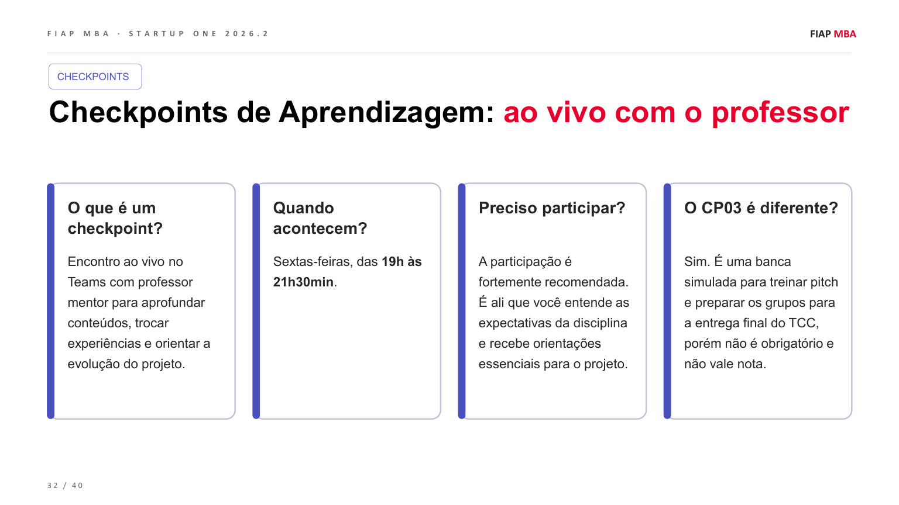
Página 33 de 40
F I A P M B A · S T A R T U P O N E 2 0 2 6 . 2 FIAP MBA
MENTORIAS
Mentorias individuais: como funcionam
Quando acontecem? Quanto tempo dura?
Entre os CPs, com disponibilidade aberta pelo Até 30 minutos por grupo em cada agendamento, com
professor em um link de agendamento. Agendamento limite de 3 no ciclo. Use bem esse tempo: seja objetivo
por grupo. e leve o material estruturado.
O que levar? A mentoria resolve o trabalho?
Dúvidas objetivas, material minimamente estruturado e Não. Ela orienta e ajuda a tomar decisões melhores. A
decisões que o grupo precisa destravar. execução é responsabilidade do grupo.
3 3 / 4 0
Ver página original com imagens e diagramas
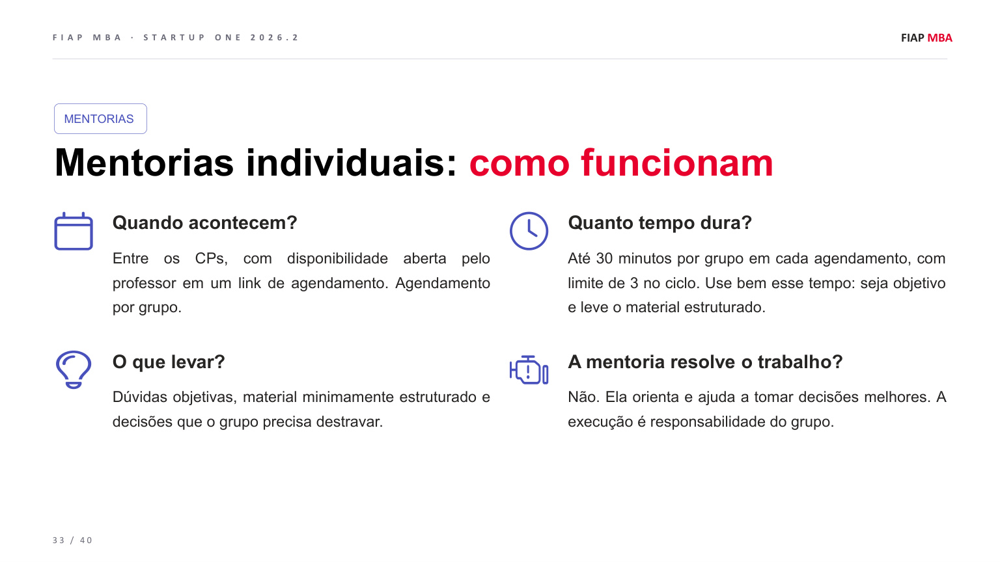
Página 34 de 40
F I A P M B A · S T A R T U P O N E 2 0 2 6 . 2 FIAP MBA
ENTREGA INTERMEDIÁRIA
Entrega intermediária: problema e solução
O que é?
1 2
Um único documento, o Estudo de Problema e Solução, que reúne a
investigação do problema e a estruturação da proposta de valor, com Problema Solução
base nas aulas 1 e 2.
Dor, público, hipóteses e Persona, jornada e proposta
evidências de pesquisa de valor
Vale nota?
Vale até +1,0 ponto na nota final do TCC. A entrega final continua 3
obrigatória.
Correção
Feedback do professor antes do CP02
Onde entregar: Portal do Aluno, no ambiente de entregas
acadêmicas, em PDF, até 19/03/2027.
3 4 / 4 0
Ver página original com imagens e diagramas
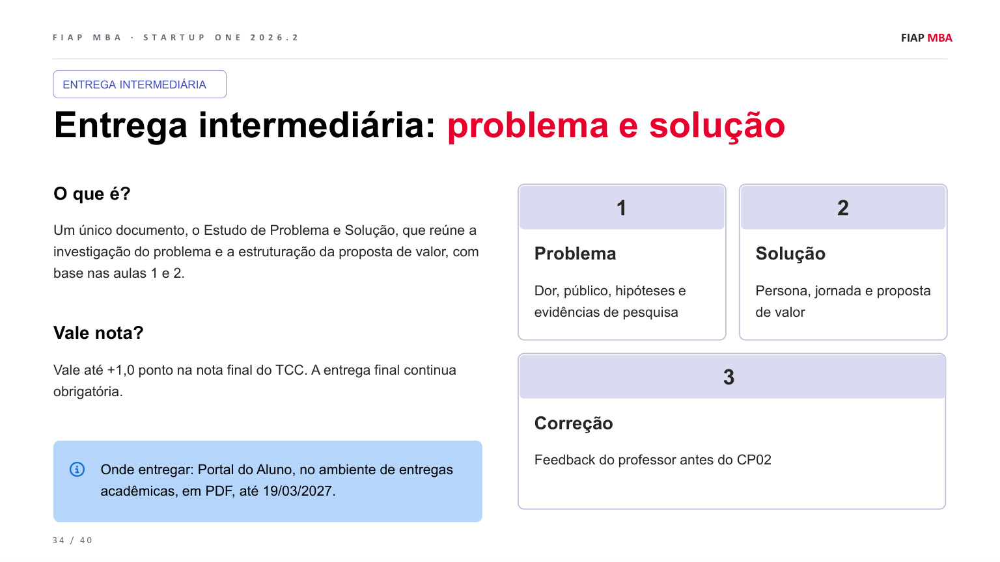
Página 35 de 40
F I A P M B A · S T A R T U P O N E 2 0 2 6 . 2 FIAP MBA
ENTREGA FINAL
Entrega final do TCC: o que compõe
Business Deck Pitch Deck Vídeo Pitch
Documento em Word, exportado para Apresentação visual, exportada para Vídeo de até 5 minutos, em link aberto
PDF, com o desenvolvimento PDF, com a narrativa do projeto, o e acessível (YouTube ou similar).
completo do projeto e a lógica protótipo e a lógica financeira.
financeira.
Envio entre 16/08 e 30/09/2027: um único integrante faz o upload no Portal do Aluno e registra os RMs de todos. Os três
materiais precisam contar a mesma história, com premissas consistentes. Os templates estão no Teams.
3 5 / 4 0
Ver página original com imagens e diagramas
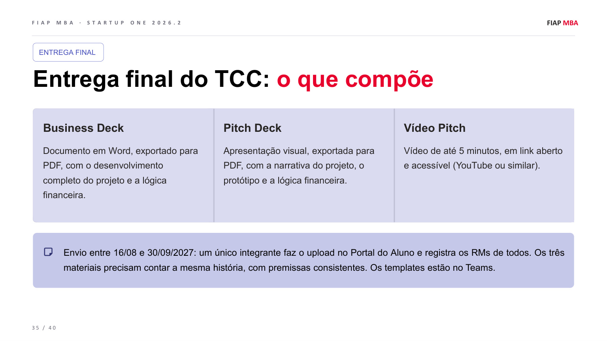
Página 36 de 40
F I A P M B A · S T A R T U P O N E 2 0 2 6 . 2 FIAP MBA
VÍDEO PITCH
Vídeo Pitch: o que precisa aparecer
Regras básicas
1 2
• Duração máxima: 5 minutos
• Publicado em link aberto (YouTube ou similar) Problema e Solução proposta
• O grupo tem liberdade criativa para usar IA e desafio
ferramentas de mídia
3 4Posso usar IA e ferramentas externas?
Sim. Use o que ajudar a contar melhor a história do projeto. O Oportunidade e Funcionamento e
que importa é que o conteúdo represente fielmente o trabalho valor gerado funcionalidades
desenvolvido.
3 6 / 4 0
Ver página original com imagens e diagramas
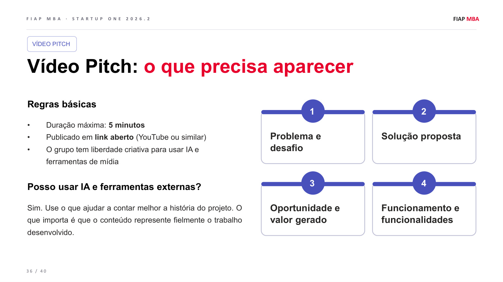
Página 37 de 40
F I A P M B A · S T A R T U P O N E 2 0 2 6 . 2 FIAP MBA
AVALIAÇÃO
Como o projeto é avaliado
O que diferencia um bom projeto?
Problema relevante, solução clara, mercado bem definido, modelo viável,
protótipo consistente e narrativa objetiva.
Design bonito resolve?
Ajuda, mas não sustenta o projeto sozinho. O mais importante é coerência,
validação, viabilidade e clareza.
O pitch conta?
Sim. Uma boa solução precisa ser bem comunicada. Pitch fraco esconde
projeto bom.
3 7 / 4 0
Ver página original com imagens e diagramas
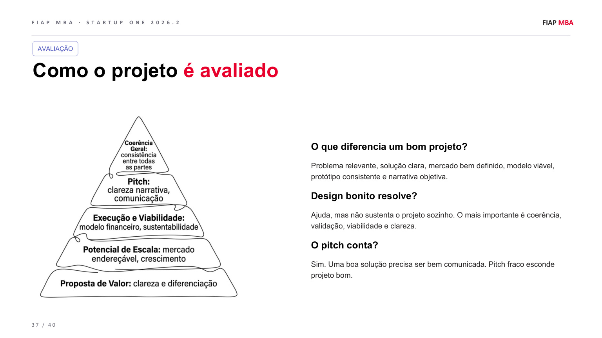
Página 38 de 40
F I A P M B A · S T A R T U P O N E 2 0 2 6 . 2 FIAP MBA
STARTUP ONE
Startup One: a competição da disciplina
Sou obrigado a competir? As 5 Ligas Temáticas
Não. A participação é opcional e indicada no momento da
Health, Wellness & Sustainability,entrega final do TCC.
Life Sciences Climate & Agri-Food
SystemsComo entro?
Na entrega final, o grupo indica que quer competir e escolhe uma Future of Work, Digital Economy,
das ligas temáticas. Learning & Talent Fintech & Smart
Commerce
Por que competir?
Visibilidade, networking, feedback de mercado, mentorias
externas e possibilidade de aceleração e premiação. Cities, Society & Creative Economy
3 8 / 4 0
Ver página original com imagens e diagramas
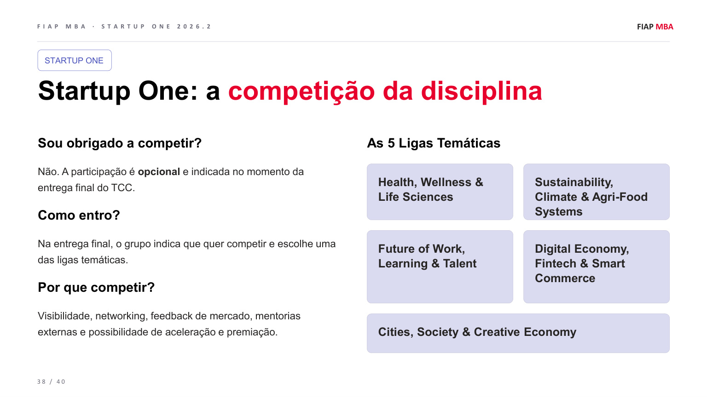
Página 39 de 40
F I A P M B A · S T A R T U P O N E 2 0 2 6 . 2 FIAP MBA
COORDENAÇÃO & SUPORTE
Quem procurar quando surgir uma dúvida
Scrum Master
Dúvidas operacionais e
validações
Professor Mentor
Coordenação
Dúvidas de projeto,
Solicitações formais e checkpoint e feedback
casos especiais
Coordenação da disciplina
Os Scrum Masters complementam o professor mentor, mas não o
Mirella Lisboa substituem. Para decisões sobre o projeto, o professor mentor é
profmirella.lisboa@fiap.com.br sempre o canal principal.
3 9 / 4 0
Ver página original com imagens e diagramas
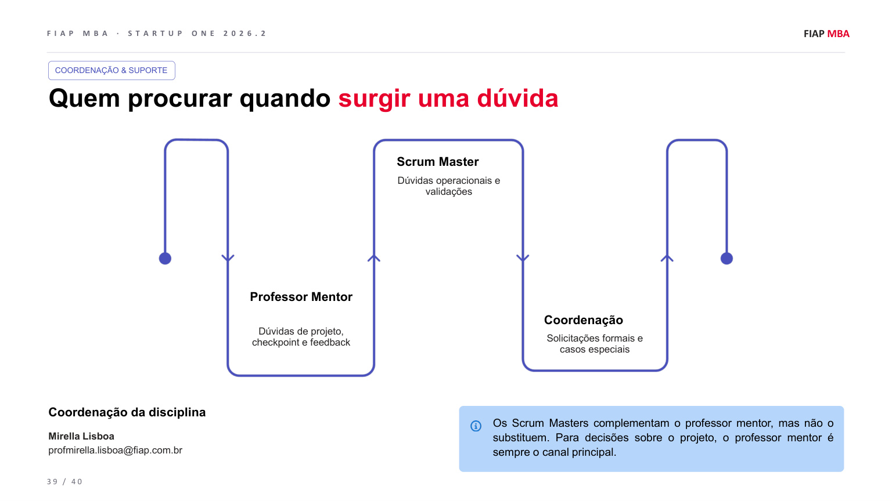
Página 40 de 40
F I A P M B A · S T A R T U P O N E 2 0 2 6 . 2 FIAP MBA
PARA FECHAR
Como evitar os erros mais comuns
Não comece tarde Não dependa de uma pessoa
Não espere a entrega final para estruturar o projeto. Cada O TCC é responsabilidade do grupo. Distribua tarefas, alinhe
etapa existe para ajudar você a chegar melhor. ritmos e não deixe o projeto nas mãos de um só.
Não ignore feedbacks Não deixe para a última hora
Feedback da entrega intermediária ignorado vira problema na Formalização de grupo, uploads e registros de RM exigem
entrega final. Leia, reflita e ajuste o projeto. tempo. Formulário com erro atrasa tudo.
A disciplina fica simples quando o grupo acompanha a jornada, respeita os prazos e evolui o projeto etapa por etapa. Boa
jornada!
4 0 / 4 0
Ver página original com imagens e diagramas
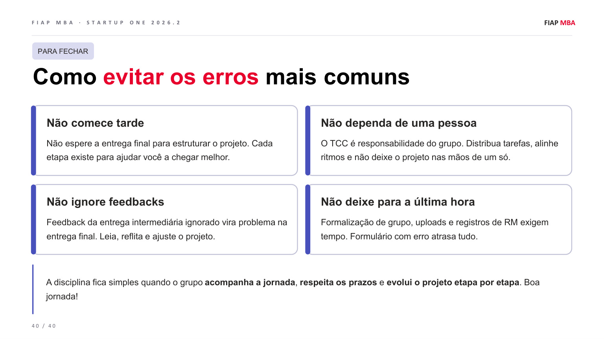